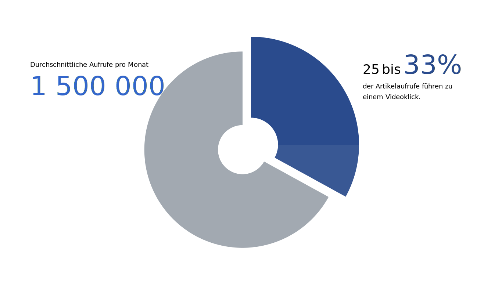

import plotly.graph_objs as go
import color
---------------------------------------------------------------------------
ModuleNotFoundError Traceback (most recent call last)
~\AppData\Local\Temp/ipykernel_15848/107117758.py in <module>
----> 1 import plotly.graph_objs as go
2
3 import color
ModuleNotFoundError: No module named 'plotly'
Hello :)¶
layout = go.Layout(
plot_bgcolor="rgba(0,0,0,0)",
paper_bgcolor="rgba(0,0,0,0)",
showlegend=False,
font={"family": "Lato", "color": "#000000"},
width=1366,
height=768,
)
donut = go.Figure(
data=[
go.Pie(
labels=["a", "b"],
values=[0.33, 0.67],
hole=0.25,
sort=False,
direction="clockwise",
pull=[0,0.1],
marker={
"colors": ["rgba(0,0,0,0)", color.BASE50],
},
textinfo="none",
hoverinfo="skip",
)
],
layout=layout
)
donut.add_trace(
go.Pie(
labels=["c", "d", "e"],
values=[0.08, 0.25, 0.67], # [0.08, 0.25, 0.67]
hole=0.25,
sort=False,
rotation=90,
marker={
"colors": ["rgba(42,75,141,0.925)", color.ACCENT30, "rgba(0,0,0,0)"]
},
textinfo="none",
hoverinfo="skip",
)
);
donut.add_annotation(
x=0, y=0.85, xref="paper", yref="paper", showarrow=False, xanchor="left", yanchor="bottom",
font={"size": 18, "color": color.BASE0},
text="Durchschnittliche Aufrufe pro Monat",
align="left",
)
donut.add_annotation(
x=0, y=0.7, xref="paper", yref="paper", showarrow=False, xanchor="left", yanchor="bottom",
font={"size": 18, "color": color.ACCENT50},
text=f"<span style='font-size:4em'>1 500 000</span>",
align="left",
)
donut.add_annotation(
x=0.75, y=0.8, xref="paper", yref="paper", showarrow=False, xanchor="left", yanchor="bottom",
font={"size": 18, "color": color.BASE0},
text="<span style='font-size:2em'>25</span> <span style='font-size:2em'>bis</span> <span style='color:#2A4B8D;font-size:4em'>33%</span><br>",
align="left",
)
donut.add_annotation(
x=0.75, y=0.75, xref="paper", yref="paper", showarrow=False, xanchor="left", yanchor="bottom",
font={"size": 18, "color": color.BASE0},
text="der Artikelaufrufe führen zu<br>",
align="left",
)
donut.add_annotation(
x=0.75, y=0.7, xref="paper", yref="paper", showarrow=False, xanchor="left", yanchor="bottom",
font={"size": 18, "color": color.BASE0},
text="einem Videoklick.",
align="left",
);
donut.show()
